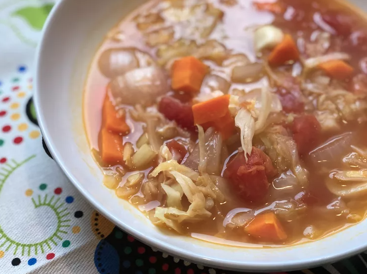

Description
This simple vegan cabbage soup is perfect for a detox diet. It's a tasty recipe that's easy to make in
your Instant Pot.
Ingredients
- 3 cups coarsely chopped green cabbage
- 2.5 cups vegetable broth
- 1 (14.5 oz) can diced tomatoes
- 3 medium carrots, chopped
- 3 stalks celery, chopped
- 1 medium onion, chopped
- 2 cloves garlic
- 2 tablespoons apple cider vinegar
- 1 tablespoon lemon juice
- 2 teaspoons dried sage
Steps
-
Combine cabbage, vegetable broth, diced tomatoes, carrots, celery, onion, garlic, vinegar, lemon juice, and
sage in a multi-functional pressure cooker (such as Instant Pot). Close and lock the lid. Select high
pressure according to manufacturer's instructions; set the timer for 15 minutes. Allow 10 to 15 minutes
for pressure to build.
-
Release pressure using the natural-release method according to manufacturer's instructions,
10 to 40 minutes. Unlock and remove the lid.
Back to main page